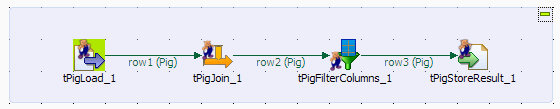
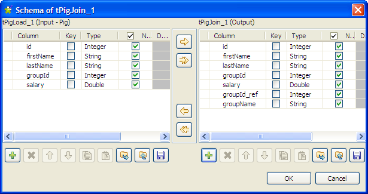
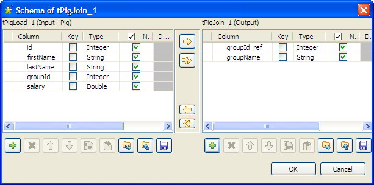
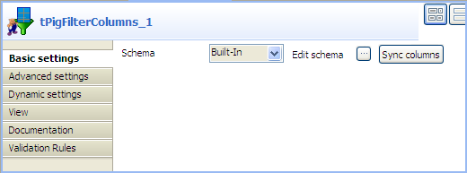

Warning
This component will be available in the Palette of the studio on the condition that you have subscribed to the relevant edition of Talend Big Data Studio.
|
Component family |
Big Data / Hadoop | |
|
Function |
This component allows you to perform join of two files based on join keys. | |
|
Purpose |
The tPigJoin component is used to perform inner joins and outer joins of two files based on join keys to create data that will be used by Pig. | |
|
Basic settings |
Schema and Edit schema |
A schema is a row description, i.e., it defines the number of fields that will be processed and passed on to the next component. The schema is either Built-in or stored remotely in the Repository. If you are using Talend Open Studio for Big Data, only the Built-in mode is available. NoteTo make this component work, two schemas must be set: the schema of the main flow and the schema of the lookup flow. In the output part of the main schema, the columns of the main input file must be manually concatenated with those of the lookup file. |
|
|
|
Built-in: The schema will be created and stored locally for this component only. Related topic: see Talend Data Integration Studio User Guide. |
|
|
|
Repository: The schema already exists and is stored in the Repository, hence can be reused in various projects and Job designs. Related topic: see Talend Data Integration Studio User Guide. |
|
|
Filename |
Fill in the path of the Lookup file. |
|
|
Join key |
Click the plus button to add lines to set the Join key for Input file and Lookup file. |
|
|
Join mode |
Select a join mode from the list: inner-join: Select this mode to perform an inner join of two or more relations based on Join keys. left-outer-join: Select this mode to performs a left outer join of two or more relations based on Join keys. right-outer-join: Select this mode to performs a right outer join of two or more relations based on Join keys. full-outer-join: Select this mode to combine the effect of applying both left and right outer joins. For further information about inner join and outer join, see: |
|
Advanced settings |
Optimize the join |
Select this check box to optimize the performance of joins using REPLICATED, SKEWED, or MERGE joins. For further information about optimized joins, see: http://pig.apache.org/docs/r0.8.0/piglatin_ref1.html#Specialized+Joins |
|
|
Use partitioner |
Select this check box to specify the Hadoop Partitioner that controls the partitioning of the keys of the intermediate map-outputs. For further information about the usage of Hadoop Partitioner, see: http://hadoop.apache.org/common/docs/r0.20.2/api/org/apache/hadoop/mapred/Partitioner.html |
|
|
Increase parallelism |
Select this check box to set the number of reduce tasks for the MapReduce Jobs |
|
|
tStatCatcher Statistics |
Select this check box to gather the Job processing metadata at the Job level as well as at each component level. |
|
Usage |
This component is commonly used as intermediate step together with input component and output component. | |
|
Prerequisites |
The Hadoop distribution must be properly installed, so as to guarantee the interaction with the Studio. For example, if you need to connect to MapR from the Studio, ensure that you have installed
the MapR client in the machine where the Studio is, and added the MapR client library to the
PATH variable of that machine. For Windows, this library is lib\MapRClient.dll in the MapR client jar file; without adding it, you may
encounter the following error: For further information about how to install an Hadoop distribution, see the manuals corresponding to the Hadoop distribution you are using. | |
|
Limitation |
Knowledge of Pig scripts is required. | |
This scenario describes a four-component Job that combines data of an input file and a reference file that matches a given join key, removes unwanted columns, and then saves the final result to a local file.
The main input file contains the information about people's IDs, first names, last names, group IDs, and salaries, as shown below:
1;Woodrow;Johnson;3;1013.39 2;Millard;Monroe;2;8077.59 3;Calvin;Eisenhower;3;6866.88 4;Lyndon;Wilson;3;5726.28 5;Ronald;Garfield;2;4158.58 6;Rutherford;Buchanan;3;2897.00 7;Calvin;Coolidge;1;6650.66 8;Ulysses;Roosevelt;2;7854.78 9;Grover;Tyler;1;5226.88 10;Bill;Tyler;2;8964.66
The reference file contains only the information of group IDs and group names:
1;group_A 2;group_B
Drop the following components from the Palette to the design workspace: tPigLoad, tPigJoin, tPigFilterColumns, and tPigStoreResult.
Connect these components in a series using Row > Pig Combine connections.

Procedure 1.16. Loading the main input file
Double-click tPigLoad to open its Basic settings view.

Click the [...] button next to Edit schema to open the [Schema] dialog box.

Click the [+] button to add columns, name them and define the column types according to the structure of the input file. In this example, the input schema has five columns: id (integer), firstName (string), lastName (string), groupId (integer), and salary (double).
Then click OK to validate the setting and close the dialog box.
Click Local in the Mode area.
Select PigStorage from the Load function list.
Fill in the Input file URI field with the full path to the input file, and leave the rest of the setting as they are.
Procedure 1.17. Loading the reference file and setting up an inner join
Double-click tPigJoin to open its Basic settings view.

Click the [...] for the main schema to open the [Schema] dialog box.
Check that input schema is correctly retrieved from the preceding component. If needed, click the [->>] button to copy all the columns of the input schema to the output schema.
Click the [+] button under the output panel to add new columns according to the data structure of the reference file, groupId_ref (integer) and groupName (string) in this example. Then click OK to close the dialog box.
Click the [...] for the schema lookup flow to open the [Schema] dialog box.
Click the [+] button under the output panel to add two columns: groupId_ref (integer) and groupName (string), and then click OK to close the dialog box.
In the Filename field, specify the full path to the reference file.
Click the [+] button under the Join key table to add a new line, and select groupId and groupId_ref respectively from the Input and Lookup lists to match data from the main input flow with data from the lookup flow based on the group ID.
From the Join Mode list, select inner-join.
Procedure 1.18. Defining the final output schema and the output file
Double-click tPigFilterColumns to open its Basic settings view.
Click the [...] button next to Edit schema to open the [Schema] dialog box.

From the input schema, select the columns you want to include in your result file by clicking them one after another while pressing the Shift key, and click the [->] button to copy them to the output schema. Then, click OK to validate the schema setting and close the dialog box.
In this example, we want the result file to include all the information except the group IDs.
Double-click tPigStoreResult to open its Basic settings view.

Click Sync columns to retrieve the schema structure from the preceding component.
Fill in the Result file field with the full path to the result file, and select the Remove result file directory if exists check box.
Select PigStorage from the Store function list, and leave rest of the settings as they are.